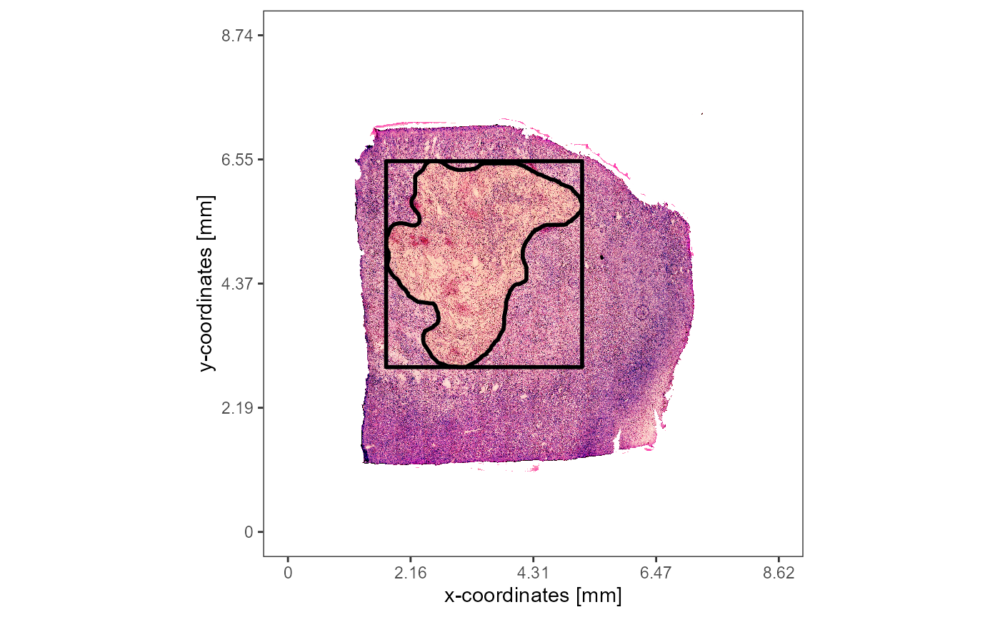
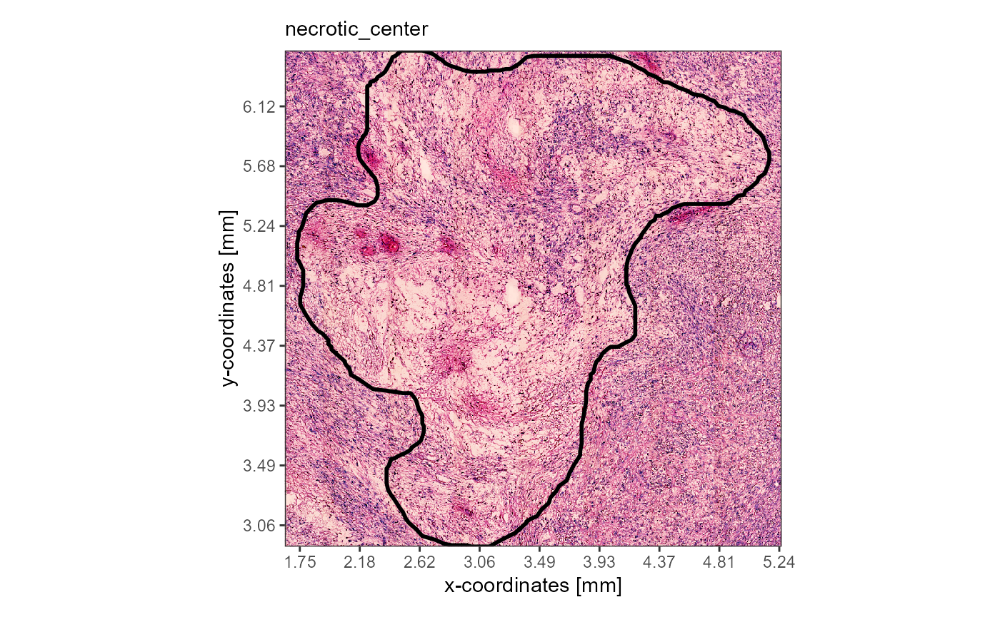
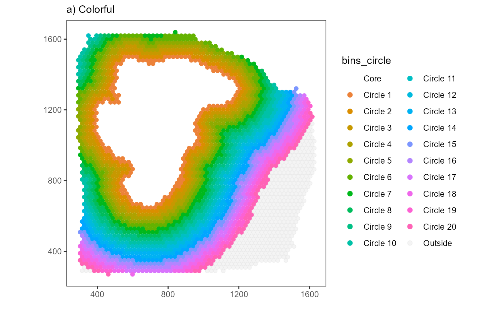

cc-image-annotation-screening.RmdImage Annotation Screening (IAS) was developed to find genes whose spatial expression stand in meaningful relation to histological areas. It makes use of SPATA2’s inbuilt image annotation system that allows to highlight and integrate the spatial extent of areas of interest in the analysis in form of image annotations. This vignette explains the concept of the IAS-algorithm step by step and provides code chunks needed to reproduce the results.
The algorithm can be divided in three parts.
Here, all steps of part 1.) and 2.) of the algorithm are shown. Part 3.) is explained in the tutorial on Model fitting in spatial transcriptomic studies.
As an example we are using a spatial transcriptomic sample of a
glioblastoma that features a prominent necrotic area in it’s center.
This area has been annotated with createImageAnnotations().
To reproduce the results of this vignette you can either create the
image annotation yourself or add it with the code you find below.
library(SPATA2)
library(SPATAData)
library(tidyverse)
object_t313 <- downloadSpataObject(sample_name = "313_T")
# create the image annotation interactively
object_t313 <- createImageAnnotations(object = object_t313)
# or set the example annotation
data("image_annotations")
object_t313 <-
setImageAnnotation(
object = object_t313,
img_ann = image_annotations[["313_T"]][["necrotic_center"]],
overwrite = TRUE
)
necrotic_area <-
ggpLayerImgAnnOutline(
object = object_t313,
ids = "necrotic_center",
line_size = 1,
alpha = 0.1,
fill = "orange"
)
# extract the polygon data.frame that contains
# information of the area of the image annotation
area_df <-
getImgAnnOutlineDf(
object = object_t313,
ids = "necrotic_center"
)
rectangular <-
ggpLayerRect(
object = object_t313,
xrange = range(area_df[["x"]]),
yrange = range(area_df[["y"]]),
expand = 0.05
)
# plot results
plotImageGgplot(object = object_t313) +
rectangular +
necrotic_area
plotImageAnnotations(
object = object_t313,
ids = "necrotic_center",
expand = 0.05,
line_size = 1,
alpha = 0,
display_caption = FALSE
)
The process of binning barcode-spots according to their distance to the image annotation can be splitted in two steps:
Mapping the x- and y-coordinates of the barcode-spots to the respective x- and y-aesthetics results in a basic surface plot.
# table on the right
coords_df <-
getCoordsDf(object = object_t313) %>%
select(-sample)
theme_add_on <-
theme(
panel.grid.major = element_blank(),
panel.grid.minor = element_blank(),
axis.title = element_blank()
)
# plot on the left
surface_plot <-
ggplot(data = coords_df, mapping = aes(x = x, y = y)) +
geom_point(color = "lightgrey", alpha = 0.5, size = 2) +
coord_equal() +
theme_bw() +
theme_add_on## # A tibble: 3,517 x 3
## barcodes x y
## <chr> <dbl> <dbl>
## 1 AAACAAGTATCTCCCA-1 1456. 1241.
## 2 AAACAATCTACTAGCA-1 781. 309.
## 3 AAACACCAATAACTGC-1 509. 1421.
## 4 AAACAGAGCGACTCCT-1 1364. 527.
## 5 AAACAGCTTTCAGAAG-1 394. 1104.
## 6 AAACAGGGTCTATATT-1 440. 1183.
## 7 AAACATGGTGAGAGGA-1 292. 1481.
## 8 AAACCCGAACGAAATC-1 1604. 1142.
## 9 AAACCGGGTAGGTACC-1 611. 1084.
## 10 AAACCGTTCGTCCAGG-1 771. 1282.
## # i 3,507 more rowsThe area of an image annotation is circumscribed by a polygon that is
created during the drawing process in
createImageAnnotations() where every few milliseconds the
position of the cursor is stored in a data.frame. The corresponding
data.frame can be extracted with getImgAnnOutlineDf().
# table on the right
area_df <-
getImgAnnOutlineDf(
object = object_t313,
ids = "necrotic_center"
)
# save image annotation layer
necrotic_area <-
geom_polygon(
data = area_df,
mapping = aes(x = x, y = y, group = ids),
size = 1,
fill = NA,
color = "black"
)
# plot results on the left
surface_plot +
necrotic_area## # A tibble: 286 x 4
## ids border x y
## <fct> <chr> <dbl> <dbl>
## 1 necrotic_center outer 512. 1378.
## 2 necrotic_center outer 512. 1363.
## 3 necrotic_center outer 510. 1354.
## 4 necrotic_center outer 505. 1350.
## 5 necrotic_center outer 505. 1347.
## 6 necrotic_center outer 500. 1341.
## 7 necrotic_center outer 498. 1334.
## 8 necrotic_center outer 498. 1330.
## 9 necrotic_center outer 498. 1323.
## 10 necrotic_center outer 500. 1312.
## # i 276 more rowsDepending on the input for argument include_area, IAS
included the area of the annotatio itself or only screens the
surrounding of the image annotation. Here, we only
screen the surrounding. Therefore, the barcode-spots that fall in the
area of the image annotation can be removed.
# create variable that contains information about
# the position of all barcode-spots in relation to
# the image annotation area
coords_df$pt_in_plg <-
sp::point.in.polygon(
point.x = coords_df$x,
point.y = coords_df$y,
pol.x = area_df$x,
pol.y = area_df$y
)
# remove barcode-spots that lie inside the polygon
filtered_coords_df <-
filter(coords_df, !pt_in_plg %in% c(1,2))
ias_surface_plot <-
ggplot(data = filtered_coords_df, mapping = aes(x = x, y = y)) +
geom_point(color = "lightgrey", alpha = 0.5, size = 2) +
coord_equal() +
theme_bw() +
theme_add_on
ias_surface_plot +
necrotic_area The package sf provides the functions
st_polygon() and st_buffer() that can be used
to expand the area. To sort the barcode-spots in the corresponding bins,
the function sp::point.in.polygon() is used to label
them.
# plot on the LEFT ----------
# add first row as the last row to "close" the area
# required by st_polygon()
closed_area_df <- area_df
closed_area_df[nrow(closed_area_df) + 1, ] <- closed_area_df[1,]
binwidth <- "0.2mm"
binwidth <- as_pixel(binwidth, object = object_t313)
print(binwidth)## [1] 45.78391
## attr(,"unit")
## [1] "px"
# grow by a buffer 20
area_df_grown20 <-
sf::st_polygon(x = list(as.matrix(closed_area_df[,c("x", "y")]))) %>%
sf::st_buffer(dist = binwidth) %>% # <- grows/buffers the polygon
as.matrix() %>%
as.data.frame() %>%
magrittr::set_colnames(value = c("x", "y")) %>%
mutate(ids = "necrotic_center") %>%
as_tibble()
# grow by a buffer of 40
area_df_grown40 <-
sf::st_polygon(x = list(as.matrix(closed_area_df[,c("x", "y")]))) %>%
sf::st_buffer(dist = (binwidth*2)) %>% # <- grows/buffers the polygon
as.matrix() %>%
as.data.frame() %>%
magrittr::set_colnames(value = c("x", "y")) %>%
mutate(ids = "necrotic_center") %>%
as_tibble()
necrotic_area_grown20 <-
geom_polygon(
data = area_df_grown20,
mapping = aes(x = x, y = y, group = ids),
size = 1,
fill = NA,
color = "red"
)
necrotic_area_grown40 <-
geom_polygon(
data = area_df_grown40,
mapping = aes(x = x, y = y, group = ids),
size = 1,
fill = NA,
color = "blue"
)
plot_area_expansion <-
ias_surface_plot +
necrotic_area +
necrotic_area_grown20 +
necrotic_area_grown40 +
labs(subtitle = "a) Area expansion")
# -----
# plot on the RIGHT ----------
area_list <-
list(
"Circle 1" = area_df_grown20,
"Circle 2" = area_df_grown40
)
filtered_coords_df$bins_circle <- "Outside"
# iterate over list names (Circle 1, Circle 2)
for(expansion in names(area_list)){
area_df_expanded <- area_list[[expansion]]
filtered_coords_df$pt_in_plg <-
sp::point.in.polygon(
point.x = filtered_coords_df$x,
point.y = filtered_coords_df$y,
pol.x = area_df_expanded$x,
pol.y = area_df_expanded$y
)
filtered_coords_df <-
mutate(
.data = filtered_coords_df,
bins_circle = case_when(
# if bins_circle is NOT 'Outside' it has already bin binned by previous expansions
# label with `expansion` (which is either 'Circle 1' or 'Circle 2')
bins_circle == "Outside" & pt_in_plg %in% c(1,2) ~ {{expansion}},
# else keep label
TRUE ~ bins_circle
)
)
}
plot_binned <-
ggplot(data = filtered_coords_df, mapping = aes(x = x, y = y)) +
geom_point(mapping = aes(color = bins_circle)) +
scale_color_manual(
values = c(
"Outside" = "lightgrey",
"Circle 1" = "red",
"Circle 2" = "blue"
)
) +
coord_equal() +
theme_bw() +
theme_add_on +
labs(subtitle = "b) Binned") +
legendNone()
# -----
plot_area_expansion
plot_binnedHow the binning is conducted and the screening is configurated depends on a few parameters. The two most important ones are:
distance: The distance from the border of the image
annotation to the horizon in the periphery up to which the
screening is conducted.binwidth: The binwidth of every bin created as
displayed above.Both, distance and binwidth are distance
measures and can be specified in pixel or in SI units. We recommend SI
units as it makes the scripts reproducible in case of changing image
resolutions. See our vignette on spatial measures in SPATA2 for more
information about SI units are handled.
The function plotSurfaceIAS() allows to visualize the
IAS setup. The binwidth of the example above has been set to 20 for
visualization purposes. By default the IAS-algorithm uses a binwidth
that is equal to the distance between the barcode-spots. This results in
bins that include one layer of barcode-spots each.
# using the center to center distance of barcodes as a binwidth
bcsp_dist <- getCCD(object_t313)
# show results
bcsp_dist## 100 [um]
plist <-
plotSurfaceIAS(
object = object_t313,
id = "necrotic_center",
distance = "2mm",
pt_clrp = "milo", # use colorful palette to highlight the bins
binwidth = bcsp_dist,
ggpLayer = ggpLayerThemeCoords(),
show_plots = FALSE
)
plist2 <-
plotSurfaceIAS(
object = object_t313,
id = "necrotic_center",
distance = "2mm",
pt_clrp = "inferno", # use continuos palette to highlight the 'direction'
binwidth = bcsp_dist,
ggpLayer = ggpLayerThemeCoords(),
show_plots = FALSE
)
# plot results
plist$bins_circle +
labs(subtitle = "a) Colorful")
plist2$bins_circle +
labs(subtitle = "b) Continuous")
The number of bins created this way is expressed in the function: \(n.bins.circle = \frac{distance}{binwidth}\)
It is possible to specify n_bins_circle which makes it
the third argument that can be used to adjust the screening.
n_bins_circle: The number of bins created within the
range from the image annotations border till the horizon where
the screening stops.If so, either distance or binwidth must
not be specified because the third parameter is always
calculated according to the first and the second one. Accordingly, the
relation between the arguments stays the same regardless of which
argument is not specified.
If distance is not specified: \(distance = binwidth * n.bins.circle\)
If binwidth is not specified: \(binwidth =
\frac{distance}{n.bins.circle}\)
# n_bins_circle = 20
# binwidth = 100um
# distance = n_bins_circle * binwidth = 20 * 100um = 2000um = 2mm
plist3 <-
plotSurfaceIAS(
object = object_t313,
id = "necrotic_center",
n_bins_circle = 20,
binwidth = bcsp_dist,
distance = NA_integer_, # NA as n_bins_circle and binwidth were specified
ggpLayer = ggpLayerThemeCoords(),
show_plots = FALSE
)
# plot results
plist3$bins_circleThe code to expand the area above is wrapped up inside the helper
function bin_by_expansion(). The binning can be displayed
in form of surface plots.
# distance of 3.3mm covers the whole extent of the sample
distance <- "3.3mm"
# convert to pixel
distance <- as_pixel(distance, object = object_t313)
bcsp_dist <- as_pixel(bcsp_dist, object = object_t313)
distance## [1] 755.4344
## attr(,"unit")
## [1] "px"
bcsp_dist## [1] 22.89195
## attr(,"unit")
## [1] "px"
# round up with ceiling()
n_bins <- ceiling(distance/bcsp_dist)
# show results
n_bins ## [1] 33
## attr(,"unit")
## [1] "px"
binned_coords <-
bin_by_expansion(
coords_df = coords_df, # the coordinates of the barcode spots
area_df = area_df, # the polygon that encircles the area of interest
binwidth = bcsp_dist,
n_bins_circle = n_bins # n_bins = 30
)
# show results
binned_coords## # A tibble: 3,517 x 6
## barcodes x y bins_circle border bins_order
## <chr> <dbl> <dbl> <fct> <chr> <dbl>
## 1 AAACAGGGTCTATATT-1 440. 1183. Core outer 0
## 2 AAACCGGGTAGGTACC-1 611. 1084. Core outer 0
## 3 AAACCGTTCGTCCAGG-1 771. 1282. Core outer 0
## 4 AAACCTCATGAAGTTG-1 508. 985. Core outer 0
## 5 AAACTTGCAAACGTAT-1 509. 1143. Core outer 0
## 6 AAAGGCTACGGACCAT-1 908. 1480. Core outer 0
## 7 AAAGGCTCTCGCGCCG-1 920. 1341. Core outer 0
## 8 AAAGGGCAGCTTGAAT-1 588. 727. Core outer 0
## 9 AAAGTAGCATTGCTCA-1 600. 1262. Core outer 0
## 10 AAATCGTGTACCACAA-1 931. 1123. Core outer 0
## # i 3,507 more rows
# a distance of 200 spans the whole sample
plot_binned <-
plotSurface2(
coords_df = filter(binned_coords, bins_circle != "Core"),
color_by = "bins_circle",
pt_clrp = "inferno"
)
# plot results
plot_binnedBy summarizing the gene expression by these circular bins the gene expression changes in relation to the distance to the area of interest can be inferred and linearly displayed. To achieve that, the genes of interest are joined to the data.frame that contains the binning information.
# example genes
genes_of_interest <- c("FN1", "MYL6", "MCTS1")
joined_df <-
joinWithGenes(
object = object_t313,
spata_df = binned_coords,
genes = genes_of_interest
) %>%
select(-x, -y) # not needed any longer
# show results
joined_df## # A tibble: 3,517 x 7
## barcodes bins_circle border bins_order FN1 MYL6 MCTS1
## <chr> <fct> <chr> <dbl> <dbl> <dbl> <dbl>
## 1 AAACAGGGTCTATATT-1 Core outer 0 0.811 0 0
## 2 AAACCGGGTAGGTACC-1 Core outer 0 0 0 0
## 3 AAACCGTTCGTCCAGG-1 Core outer 0 0.716 0 0
## 4 AAACCTCATGAAGTTG-1 Core outer 0 0.570 0 0
## 5 AAACTTGCAAACGTAT-1 Core outer 0 0.447 0.694 0
## 6 AAAGGCTACGGACCAT-1 Core outer 0 0.813 0.257 0
## 7 AAAGGCTCTCGCGCCG-1 Core outer 0 0.646 0.195 0
## 8 AAAGGGCAGCTTGAAT-1 Core outer 0 0.531 0.366 0
## 9 AAAGTAGCATTGCTCA-1 Core outer 0 0.441 0 0
## 10 AAATCGTGTACCACAA-1 Core outer 0 0.648 0 0
## # i 3,507 more rowsSummarizing the genes by bin and shifting the perspective allows to plot the three genes along the variable bins_circle and to display the gene expression as a function of distance to the necrotic area.
smrd_df <-
# group barcode-spots by bin
group_by(joined_df, bins_circle) %>%
# summarize gene expression
summarize(
dplyr::across(
.cols = {{genes_of_interest}},
.fns = ~ mean(.x)
)
) %>%
ungroup() %>%
# rescale gene expression
mutate(
dplyr::across(
.cols = {{genes_of_interest}},
.fns = ~ normalize(.x) # ensure a range from 0 to 1
),
bins_numeric = (as.numeric(bins_circle)-1) # convert to numeric variable
) %>%
select(bins_numeric, everything(), -bins_circle)
# show results
smrd_df## # A tibble: 34 x 4
## bins_numeric FN1 MYL6 MCTS1
## <dbl> <dbl> <dbl> <dbl>
## 1 0 0.610 0 0.304
## 2 1 0.961 0.151 0.283
## 3 2 1 0.241 0.342
## 4 3 0.970 0.222 0.763
## 5 4 0.944 0.308 0.507
## 6 5 0.982 0.280 0.563
## 7 6 0.920 0.324 0.523
## 8 7 0.871 0.327 0.840
## 9 8 0.855 0.371 0.745
## 10 9 0.843 0.396 0.643
## # i 24 more rowsUsing scatter- or lineplots, the expression change of a gene can be plotted against the distance to the necrotic area.
# create plot
shifted_df <-
pivot_longer(
data = smrd_df,
cols = {{genes_of_interest}},
names_to = "genes",
values_to = "values"
)
ggplot(shifted_df, mapping = aes(x = bins_numeric, y = values)) +
geom_point() +
geom_smooth(method = "lm") +
geom_vline(xintercept = 0.5, linetype = "dashed") + # indicate image annotation border
facet_wrap(facets = . ~ genes, nrow = 1) +
theme_classic() +
theme(
axis.line.x = element_line(
arrow = arrow(length = unit(0.075, "inches"), type = "closed")
),
) +
labs(x = "Circular Bins")While genes FN1 and MYL6 follow a clear descending
or ascending trend gene MCTS1 does not. The corresponding
surface plots visualize that, too. FN1 is expressed highly in
close proximity to the necrotic_center. The expression levels decrease
with the distance to the area (model: linear descending). The opposite
is true for gene MYL6 which increases with the distance to the
necrotic area (model: linear ascending). Note, that the dashed line
indicates the positioning of the image annotation border. The bin left
to it corresponds to the mean expression inside the
image annotation. Depending on the argument include_area
this can be integrated in the visualization or not.
plotSurfaceComparison(
object = object_t313,
color_by = genes_of_interest,
display_image = FALSE,
pt_clrsp = "Greens 3",
nrow = 1
) +
ggpLayerEncirclingIAS(
object = object_t313,
id = "necrotic_center",
distance = "2.25mm",
binwidth = "225um",
line_size = 0.75,
line_size_core = 1
) Click here to be guided to the vignette that explains how the inferred expression changes are fitted to models to find genes such as FN1 and MYL6.